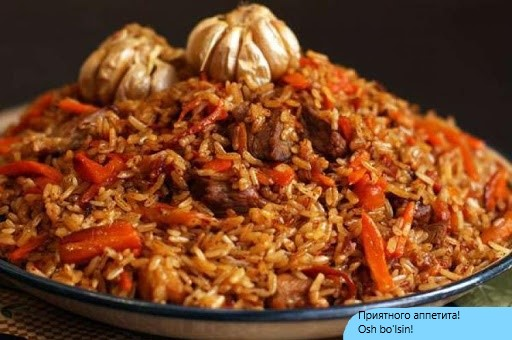

И самое главное: "готовим с любовью!" - говорила моя бабушка и мама!
Нарезаем сначало лук полу-кольцами. Дальше нарезаем морковь соломинкой. Включаем самую большую комфорку газовой плиты на максимум Затем ставим наш казан на огонь и выливаем туда весь 1 литр масла. Для начало,в масло бросаем нарезнанный лук, в масло лук нужно бросать смотря какой вид у вас масло: хлопковое, кунжутное и т.д. Если кунжутное или хлопковое, то после разогрева масел. Потом после жарки лука до золотистого цвета, бросаем в казан мясо кусками ( у меня 5 кусков с одинаковыми размерами), и ждём пока мясо тоже не окраситься в золотисто-тёмный цвет. Берём нарезанную морковь и тоже бросаем в наш казан, перемешиваем хорошенько, и ждём 3-5 минуты, после этого моем целиком чеснок и перцы и кладём в казан, затем выливаем кипятка воды чтобы вода покрывала поднималась над поверхностью моркови 1-1,5 см., присыпываем давленной зирой, снова перемешиваем, затем ставим огонь на 1/4 и ждём пока закипит мелкими пузырьками. Пока ждём, приготовим рис: чистим от мелкого мусора (камешки, ниточки от мешка, и т.д.) моем под проточной водой, заливаем кипятком, температурой слегка обжигающая руку, и ждём тоже 10-5 минут. Теперь всё готово и кладём рис в казан, не раздавливая рис и обжарку под ней стелим его, дальше заливаем водой, как заливали нашу обжарку: чуть привышала уровень риса 1,5-1 см., и после выполненного высше, ставим огонь на половину 2/4, и так тоже 10-15 минут и, ПОТОМ закрымаем крышкой, при огне 1/4 и через 10-12 минут переварачиваем (смешиваем) только РИС, чтобы не коснуться обжарки и не испортить вид нашего плова, смешивайте только рис, дальше снова закрымаем крышку, чтобы пар не выходил и так 15 минут, когда плов готов рис должен не хрустеть и не быть слишком мягким, а что-то средне между ними. Правильнее плов кладут в ляган, а в итоге плов у вас должен выглядить так:
Приятного аппетита!